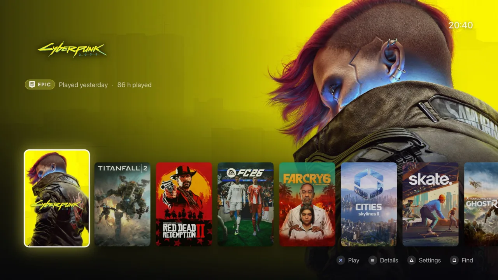
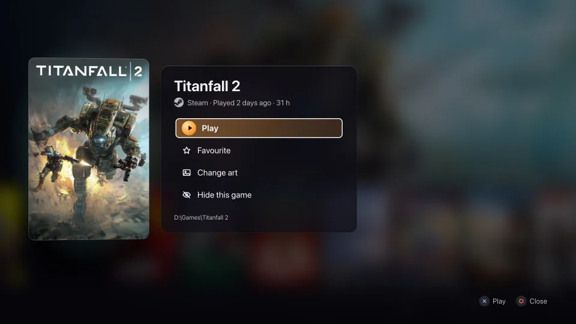
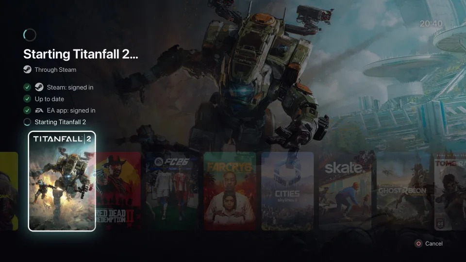
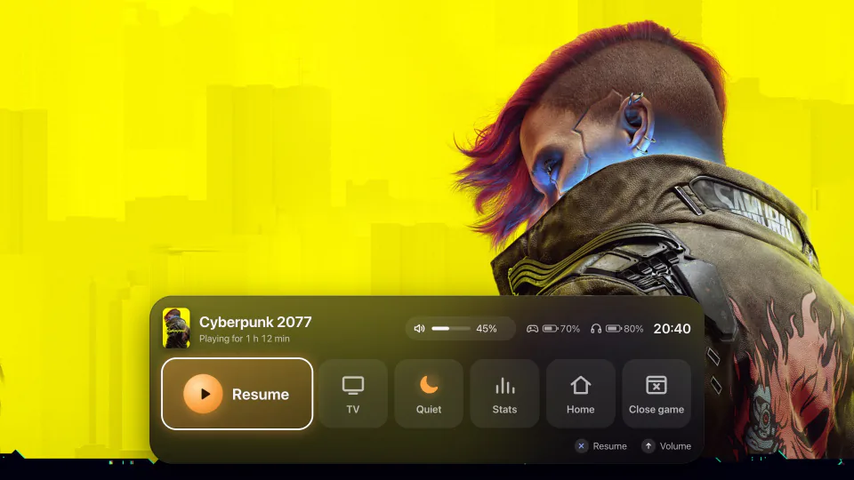
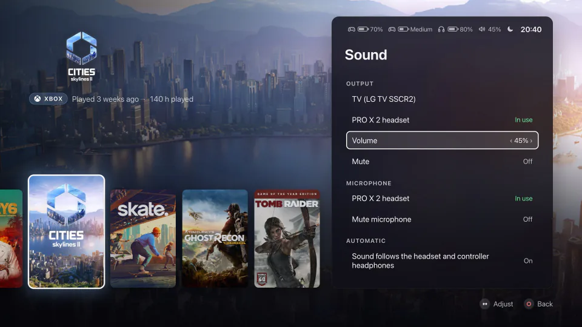
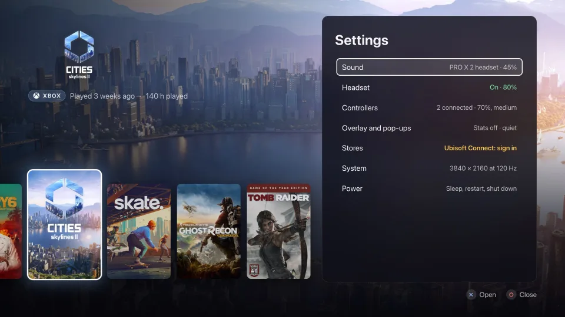
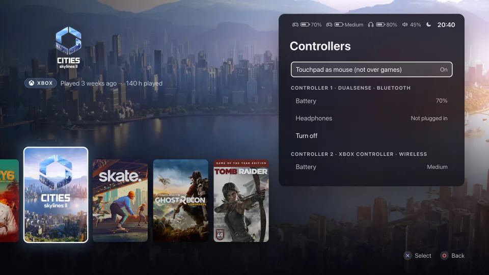

Your games, from the couch.
Lamplit is a free, console-style home screen for the gaming PC under your TV. It puts every installed game in one row, from ten stores, and starts each one from the sofa with a controller.

Your installed games from
Made for the TV and a controller
A gaming PC under the TV usually comes with a handful of store apps, sign-in windows and Windows pop-ups, most of them made for a mouse. Lamplit keeps them out of your way, so the TV shows your games.
Your library
Every game in one row
-
Nothing to set up
Lamplit reads what your store apps have installed, and finds games outside any store too. Nothing to import, connect or sign in to.
-
Favourites, then last played
Star the games you play most. Hide anything that isn't a game.
-
Find a game
Press Square and type "rdr" for Red Dead Redemption 2. Filter by store or sort A to Z.
-
Play time
How long you've played every game, not only the Steam ones.
-
Cover art from Steam
Covers, backgrounds and logos from Steam, for games from every store. Online art can be switched off.
-
New installs show up
Install a game and it's in the row. Steam downloads and pending updates are marked.
A game's menu
Everything about a game, one press away
Press Options on a game to see its store and your play time, and to play, favourite, hide or change its art.
- Wrong cover? Pick another or search again.
- Add a game Lamplit missed, with the controller.
- Close game and Shut down take a hold, so a stray press does nothing.

Launching
Press Cross and play
A game can need more than one store app: some Steam games also need the EA app or Ubisoft Connect. Lamplit starts each one, waits for it to sign in and shows Steam's update progress. If a store app needs you to sign in, Lamplit says so and opens it for you.
- No desktop flashing up between Lamplit and the game.
- If a launcher wants a click, the starting screen says so.
- The PC and the TV stay awake while a store app starts or Steam downloads an update.

While you play
The dock, over your game
Hold PS (View and Menu on Xbox) and a dock rises over the game: volume, sound output, quiet mode, performance stats, Home and Close game, with your batteries and the time.
- A frozen game gets Force close.
- It peeks up when a headset turns on, a controller connects or a battery runs low.
- A separate window: nothing hooks into the game.

Screensaver
Art from your games while nobody plays
Put the controller down and, after a few minutes, seven live scenes coloured from your games' art take over the screen. Nothing static stays on your OLED.
- The first press ends it without starting anything.
- After an hour it fades to black.
- Pick the delay, or switch it off.
Sound and accessories
Sound settings from the sofa
Choose the output and the microphone, change the volume and mute either, all with the controller. Sound follows you: turn the PRO X 2 headset on and the sound moves to it; plug headphones into the controller on a USB cable and it moves there. When they go, it moves back.
- Logitech G PRO X 2 LIGHTSPEED: whether it is on, its battery, sidetone and auto-off timer. Other headsets work as normal sound devices.
- NVIDIA's performance stats (frame rate, GPU and CPU load) on and off, when NVIDIA's overlay is installed.

Quiet mode
No pop-ups over your game
Quiet mode stops Windows' notification banners, tips and suggestions, Game Bar's start-up tips, Ubisoft Connect's notifications and overlay, and Steam's notifications. Switch it off and every setting goes back to what it was.
- Steam's Big Picture mode stays closed, and Steam's window is minimised after a Steam game.
- Steam's notifications need Steam's DevTools port, a setting that is off until you switch it on.

Controller
Navigate with your controller
DualSense, Xbox and other controllers, several at once. The button hints follow the controller in your hands: Cross and Circle, or A and B. Hold a direction and the row speeds up; L1 and R1 jump five games. Lamplit only reads the controller, so Steam and your games see it as before.
- Battery for every controller that reports one. On a DualSense also whether headphones are plugged in, and Turn off on Bluetooth.
- The touchpad as a mouse, for store apps and Windows dialogs. Off until you switch it on, and never over a full-screen game.
- A keyboard and mouse work too.

What it works with
Lamplit runs on Windows only, on purpose: the EA app, Ubisoft Connect, the Rockstar Games Launcher and the Xbox app exist only there.
Stores
- Steam
- Epic Games Launcher
- GOG (GOG Galaxy or offline installers)
- EA app
- Ubisoft Connect
- Rockstar Games Launcher
- Battle.net
- Amazon Games app
- itch.io (the itch app)
- Xbox app, including PC Game Pass
- Games outside any store
Controllers
- DualSense, over USB or Bluetooth
- DualSense Edge (read the same way, not tested yet)
- Xbox controllers and ones that work like one (not tested yet)
- Other controllers Windows knows, such as a DualShock 4, while Lamplit is in front (not tested yet)
- Keyboard and mouse
Headset
- Logitech G PRO X 2 LIGHTSPEED, through its USB receiver, without G HUB
- Any other headset, as a normal Windows sound device
New: built from public protocol notes. Battery, sidetone and auto-off aren't yet confirmed on a real headset.
PC
- Windows 10 or Windows 11, 64-bit
- Microsoft Edge WebView2 Runtime: part of Windows 11, and the installer downloads it when it is missing
- For the dock: games in borderless or windowed mode
Install
One installer, no admin rights, and a one-time setup so Lamplit starts when you sign in.
-
Download and run the installer
Run
Lamplit-setup.exe. It installs Lamplit for your Windows account only, adds it to the Start menu and doesn't ask for admin rights. -
Get past the Windows warning
Lamplit isn't code-signed yet, so SmartScreen shows “Windows protected your PC”. Click:
More info Run anyway
Edge may also say the file isn't commonly downloaded: open the download's ... menu, choose Keep, then Show more and Keep anyway. If Smart App Control is on, Windows blocks the installer and offers no way past.
-
Run the one-time setup
Open Settings (Triangle), go to System and choose First-time setup. Answer the Windows prompt with a mouse or keyboard.
It adds a task that starts Lamplit when you sign in, and repairs Steam's background service so Steam doesn't stop to ask for admin rights. Without it, Lamplit works the same, but you start it yourself.
To update, run the new installer into the same folder: your settings, art and logon task stay. Everything Lamplit changes on your PC, and how to undo it, is listed in What Lamplit changes on your PC.
Questions
Anything else? The README has more answers, and you can always open an issue.
Does it cost anything?
No. Lamplit is free to download, use, change and share for any noncommercial purpose. Playing games with it at home is exactly what it's for. Selling it, or bundling it into something you sell, isn't allowed.
Does Lamplit replace Steam?
No. Steam games still start through Steam, which has to be installed and signed in. Lamplit only takes over Steam's job as the big-screen interface: it closes Big Picture whenever Steam opens it. You don't need Steam at all for games from other stores; art still comes from Steam's public store website.
How is it different from Steam Big Picture or Playnite?
Choose Big Picture if nearly everything you play is on Steam. Choose Playnite if you want themes, emulators, or a library you shape yourself. Lamplit is for a TV PC that already has games in several stores and should show them all without setup.
My controller isn't a DualSense. Can I use it?
Yes. Xbox controllers, and the many that work like one, are read too: hold View and Menu for a second to bring Lamplit over a game, since the Xbox button belongs to Windows' Game Bar. Other controllers Windows knows, such as a DualShock 4 or a Switch Pro Controller, work while Lamplit is in front. The headphone and Turn off rows in Settings are a DualSense's.
Is it safe to use with anti-cheat?
Lamplit doesn't inject code into games, hook them or draw inside them. The dock is a separate window above the game. To know when a game starts and closes, Lamplit reads the list of running processes and the folder each one runs from, as other launchers do. If a game's anti-cheat ever objects, please open an issue.
Does it send anything online?
Only requests for game art to Steam's store, and only while Find art online is on: the names of games that aren't from Steam, Steam app ids, and your country. No accounts, no telemetry. The privacy notes have every detail.
How do I remove it?
First switch off Quiet mode and Steam's DevTools port in Settings: the uninstaller can't undo those. Then uninstall Lamplit from Settings > Apps > Installed apps in Windows.
Put your games on the TV
Free for Windows 10 and 11. Install it, run the setup once, and pick up the controller.
Keep the lamp on
If Lamplit is how you start your games now, you can support it on GitHub Sponsors. Sponsorship pays for code signing, so Windows names the publisher. It also buys more headsets and controllers for Lamplit to support.